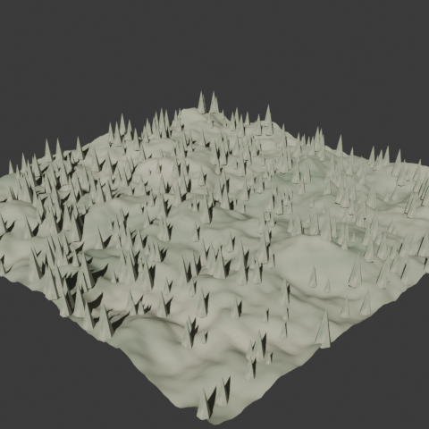

Blender 3
Geometry Nodes
Geometry Nodes is Blender's visual programming system for procedural modelling. Instead of writing lines of code you connect boxes, but the ideas are exactly the ones in this course: fields, noise, scattering, instancing. This lesson explains the system, then builds a node tree from Python.
What Geometry Nodes is
A Geometry Nodes setup is a modifier whose behaviour you design as a graph. Geometry flows in on the left, passes through nodes that each change it, and flows out on the right. Because it is a modifier, the result updates live as you change any value, and the original object is never destroyed.
Two kinds of thing travel along the connections:
- Geometry
- Actual data: a mesh, a set of points, curves, or instances. Drawn as green connections.
- Fields
- A formula that will be evaluated once per vertex, point or face: "this element's position", "noise at this position". Drawn with dashed lines.
A field is the same idea as in Lesson 1: a rule that gives a value for every location. Connect "noise at position" to the offset of a Set Position node and every vertex moves by its own noise value. Nothing is looped over by hand.
The nodes that matter most
| Node | What it does | In this course |
|---|---|---|
| Grid, Ico Sphere, Curve Line… | Create a starting shape | The grid of Lesson 1 |
| Set Position | Move every element, by a field | Displacement, Lesson 3 |
| Noise Texture, Voronoi Texture | Fields of noise | Lessons 3 and 7 |
| Math, Vector Math, Map Range | Arithmetic on fields | Shaping functions, Maths 1 |
| Distribute Points on Faces | Scatter points over a surface, optionally evenly spaced | Poisson-disc sampling, Lesson 7 |
| Instance on Points | Put a copy of a shape at every point | Instancing, three.js 2 |
| Random Value | A different random number per element, from a seed | Lesson 2 |
| Extrude Mesh, Scale Elements, Subdivide | Modelling operations | |
| Mesh to Curve, Curve to Mesh | Convert between lines and tubes | Streamlines as tubes |
| Join Geometry | Combine several results | |
| Realize Instances | Turn instances into real, editable geometry | Needed before exporting for print |
| Repeat Zone | Run a group of nodes several times | Loops and recursion, Lesson 6 |
| Simulation Zone | Keep the result of the last frame and build on it | Simulations, Lesson 8 |
Nodes or Python?
| Use Geometry Nodes when… | Use Python when… |
|---|---|
| You want to see the result change as you drag a value | The logic has many branches, or needs data from outside Blender |
| The work is geometric: scatter, displace, instance, extrude | You are generating many separate files or scenes |
| Others will use the setup without reading code | You need an algorithm that is awkward as a graph: an L-system, a packing loop |
| Millions of elements: it is far faster than Python loops | You are building tools: buttons, panels, exporters |
They also work well together. Python can build node trees, set their inputs and feed them data, which is what the rest of this lesson does. The honest advice is to build a tree by hand in the node editor first, because that is how you learn what each node does. Script it when you need to create trees automatically, share them as part of an add-on, or drive their settings from a seed.
Building a node tree from Python
The script below creates this tree. Read it against the diagram.
Grid ──► Set Position ──► Set Shade Smooth ──────────────────┐
▲ │ ├─► Join ─► Set Material ─► output
Noise ─► × Height └─► Distribute Points ─► Instance on Points ┘
▲ ▲
Cone Random Value (size)
The tree and its inputs
A node tree is a datablock like a mesh. Its interface declares what the modifier will show: here the standard geometry in and out, plus two settings of our own.
tree = bpy.data.node_groups.new("Procedural Hills", "GeometryNodeTree")
tree.interface.new_socket(name="Geometry", in_out="INPUT", socket_type="NodeSocketGeometry")
tree.interface.new_socket(name="Geometry", in_out="OUTPUT", socket_type="NodeSocketGeometry")
height_socket = tree.interface.new_socket(name="Height", in_out="INPUT", socket_type="NodeSocketFloat")
height_socket.default_value = 1.6
density_socket = tree.interface.new_socket(name="Tree Density", in_out="INPUT", socket_type="NodeSocketFloat")
density_socket.default_value = 3.0Nodes and links
Each node is created by its type name, given values through its inputs, and connected with links.new(from_output, to_input). Setting a location is optional, but it makes the tree readable when you open it in the editor.
nodes, links = tree.nodes, tree.links
def add(kind, x, y):
node = nodes.new(kind)
node.location = (x, y)
return node
group_in = add("NodeGroupInput", -900, 0)
group_out = add("NodeGroupOutput", 900, 0)
# 1. a flat grid
grid = add("GeometryNodeMeshGrid", -700, 200)
grid.inputs["Size X"].default_value = 10.0
grid.inputs["Size Y"].default_value = 10.0
grid.inputs["Vertices X"].default_value = 120
grid.inputs["Vertices Y"].default_value = 120
# 2. a noise texture, turned into an upward offset
noise = add("ShaderNodeTexNoise", -700, -150)
noise.inputs["Scale"].default_value = 0.45
noise.inputs["Detail"].default_value = 5.0
multiply = add("ShaderNodeMath", -480, -150)
multiply.operation = "MULTIPLY"
links.new(noise.outputs[0], multiply.inputs[0]) # the noise value...
links.new(group_in.outputs["Height"], multiply.inputs[1]) # ...times the Height setting
offset = add("ShaderNodeCombineXYZ", -280, -150)
links.new(multiply.outputs[0], offset.inputs["Z"])
set_position = add("GeometryNodeSetPosition", -80, 150)
links.new(grid.outputs["Mesh"], set_position.inputs["Geometry"])
links.new(offset.outputs["Vector"], set_position.inputs["Offset"])The Noise Texture node has no explicit position input connected. A field node with nothing plugged in uses each element's own position, which is why this works.
Scattering and instancing
scatter = add("GeometryNodeDistributePointsOnFaces", 110, -100)
links.new(set_position.outputs["Geometry"], scatter.inputs["Mesh"])
links.new(group_in.outputs["Tree Density"], scatter.inputs["Density"])
cone = add("GeometryNodeMeshCone", 110, -380)
cone.inputs["Vertices"].default_value = 6
cone.inputs["Radius Bottom"].default_value = 0.09
cone.inputs["Depth"].default_value = 0.45
random_size = add("FunctionNodeRandomValue", 110, -620) # each tree a different size
random_size.data_type = "FLOAT"
random_size.inputs["Min"].default_value = 0.5
random_size.inputs["Max"].default_value = 1.6
instance = add("GeometryNodeInstanceOnPoints", 380, -100)
links.new(scatter.outputs["Points"], instance.inputs["Points"])
links.new(cone.outputs["Mesh"], instance.inputs["Instance"])
links.new(random_size.outputs[0], instance.inputs["Scale"])Using the tree
The tree does nothing until an object has a Geometry Nodes modifier that points to it. The object's own mesh can be empty, since the tree creates everything.
mesh = bpy.data.meshes.new("Hills")
hills = bpy.data.objects.new("Hills", mesh)
bpy.context.scene.collection.objects.link(hills)
modifier = hills.modifiers.new("Procedural Hills", "NODES")
modifier.node_group = tree
def set_input(modifier, socket, value):
"""Change an exposed setting from Python. Each one is stored under its socket's identifier."""
if hasattr(modifier, "properties"): # Blender 5.x
getattr(modifier.properties.inputs, socket.identifier).value = value
else: # Blender 4.x
modifier[socket.identifier] = value
set_input(modifier, height_socket, 2.0)
set_input(modifier, density_socket, 4.0)Version differences are real here. While testing this script in Blender 5.3 the 4.x way of setting a modifier input, modifier["Socket_2"] = value, failed with an error, which is why set_input has two branches. The 4.x branch is written from the documentation and was not run. Socket names also change between versions: the Noise Texture's first output is called "Fac" in 4.x and "Factor" in 5.x, so the script uses outputs[0]. When a script that builds nodes fails after an update, print the node's inputs and outputs names first.
Procedural materials
Materials are node trees too, built the same way. A procedural material computes the surface colour from formulas, like the materials in Special Topic 2. The usual recipe is a texture field, shaped by a colour ramp, into the surface shader.
mat = bpy.data.materials.new("Layered Rock")
mat.use_nodes = True
mnodes, mlinks = mat.node_tree.nodes, mat.node_tree.links
bsdf = mnodes["Principled BSDF"]
texture = mnodes.new("ShaderNodeTexNoise")
texture.inputs["Scale"].default_value = 2.5
texture.inputs["Detail"].default_value = 8.0
ramp = mnodes.new("ShaderNodeValToRGB") # a colour ramp: maps 0..1 to a gradient
ramp.color_ramp.elements[0].color = (0.10, 0.22, 0.12, 1.0)
ramp.color_ramp.elements[1].color = (0.75, 0.68, 0.50, 1.0)
mlinks.new(texture.outputs[0], ramp.inputs[0])
mlinks.new(ramp.outputs["Color"], bsdf.inputs["Base Color"])
bsdf.inputs["Roughness"].default_value = 0.85Geometry made by a node tree has no material until a Set Material node assigns one, which is the last node in the script.
From Blender to the printer
Instances are references, not real geometry, and they often overlap the surface they stand on. Before exporting a Geometry Nodes result for printing:
- Add a Realize Instances node at the end, so the copies become actual mesh.
- Merge overlapping parts into one skin. A Remesh modifier after the Geometry Nodes modifier is the simplest way, or use a Mesh Boolean node set to union.
- Give open surfaces thickness, with Solidify or an Extrude Mesh node.
- Export with modifiers applied, as in the last lesson.
Key ideas
- Geometry Nodes is a modifier whose behaviour is a graph: geometry in, nodes, geometry out.
- Fields are formulas evaluated per element. Noise into Set Position displaces every vertex.
- Distribute Points plus Instance on Points is the scattering pattern for everything.
- Python creates trees with
node_groups.new,nodes.newandlinks.new, and exposes settings throughtree.interface. - Node and socket names change between Blender versions. Reach unreliable sockets by position.
- Realize instances and merge overlaps before printing.
Blender challenge 3
A Scatter System
Build a reusable Geometry Nodes setup that covers any surface with generated detail, and a script that creates it.
Requirements
- A node tree that works on whatever mesh the modifier is put on, using the incoming geometry instead of creating its own.
- Points are scattered with a density that varies across the surface by a field: noise, height, or steepness.
- At least two different instance shapes, chosen per point, with random scale and rotation.
- At least four exposed settings, including a seed, with sensible defaults and limits.
- A procedural material assigned inside the tree.
- A script that builds the whole thing from an empty file and applies it to a test object.
Hints
- Build it by hand first. Then recreate it in Python node by node, running the script after each addition.
- Connect the Group Input's Geometry straight to Distribute Points on Faces.
- For density by steepness, use the Normal node's Z component.
- Steal the structure of
03_geometry_nodes.py, especially theaddhelper.
You are done when
- The same modifier gives good results on a plane, a sphere and Blender's monkey.
- Someone can use it from the modifier panel without opening the node editor.
References and further reading
The sources for this page, and other places that cover the same ground.
- Blender Foundation, Blender Manual: Geometry Nodes. The reference for every node.
- Blender Foundation, Blender Python API Documentation. Node trees can be built from Python. See the node classes.
- Robert Bridson, “Fast Poisson Disk Sampling in Arbitrary Dimensions”, SIGGRAPH 2007 sketches. The method behind the Poisson-disc option when scattering points.